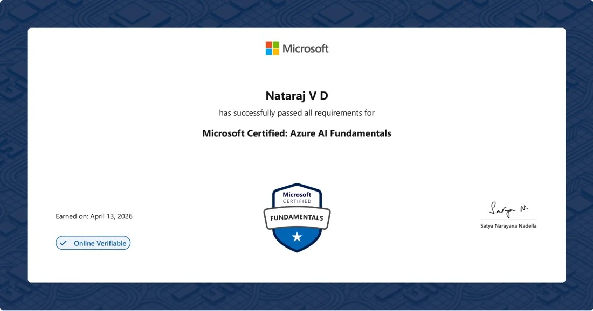
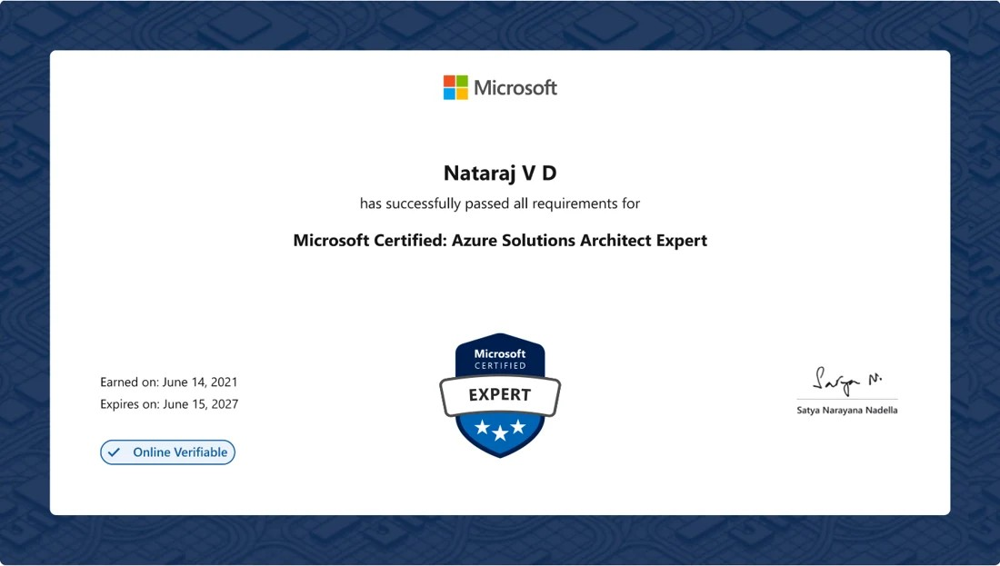

Cloud Platforms
Working with Azure and AWS infrastructure, from resource administration to the operational details that keep environments supportable.
- Azure
- Azure Arc
- AWS
- Systems Manager
Senior System Engineer / Bangalore, India
Senior System Engineer with infrastructure experience since 2007. I build across AWS, Azure, and PowerShell—including a solo-developed cloud operations platform with evidence-led AI investigation.
Azure and AWS infrastructure, with attention to the details that keep environments supportable.
Explore cloud expertise ↗01 / About
My infrastructure career began in 2007. Since then, I’ve worked across on-premises systems, virtualization, identity, and cloud platforms, with a steady focus on keeping essential services dependable.
I enjoy turning recurring operational problems into practical automation: understanding the failure, simplifying the workflow, and documenting the result so teams can use it with confidence. I continue to learn how AI can assist investigation and infrastructure work.
See my areas of expertise02 / Expertise
Platform knowledge, operational discipline, and useful automation belong together.
Working with Azure and AWS infrastructure, from resource administration to the operational details that keep environments supportable.
Building scripts and repeatable workflows that reduce manual steps and give engineers a clearer path through routine work.
Connecting the fundamentals of Windows, identity, and virtualization with careful troubleshooting and change management.
Building grounded AI assistance for infrastructure knowledge and incident investigation, alongside the everyday practices of reliable operations.
03 / Selected projects
Selected work built at FIS. These summaries describe the engineering approach without exposing internal systems or client details.
04 / Experience
Infrastructure work shaped by operations, troubleshooting, and steady improvement.
FIS (Fidelity National Information Services)
Accenture
Digicom
05 / Credentials
AI-900 is shown from its certificate; the linked Microsoft transcript covers the qualifications on that profile.
View Microsoft transcript

MBA, Information SystemsSikkim Manipal University · 2013–2015
B.Sc., Information TechnologyAnnamalai University · 2010–2012
VMware Certified Associate — Data Center VirtualizationEarned 28 November 2013
Microsoft Specialist — Server Virtualization with Windows Server Hyper-V and System CenterEarned 6 June 2014
ITIL v3 Foundation
Windows PowerShell: For the IT Professional — Part 1Microsoft WorkshopPLUS · Completed 27 July 2018 · Identifier omitted
Windows PowerShell v4.0 for the IT Professional — Part 2Microsoft WorkshopPLUS · Completed 9 August 2018 · Identifier omitted
PowerShell 5: Desired State ConfigurationMicrosoft WorkshopPLUS · Completed 16 August 2018 · Identifier omitted
TerraformTraining completed in 2025
Cisco HyperFlex · Udemy courseCompleted 23 May 2021
06 / Contact
Open to conversations about cloud operations, infrastructure, and practical automation.